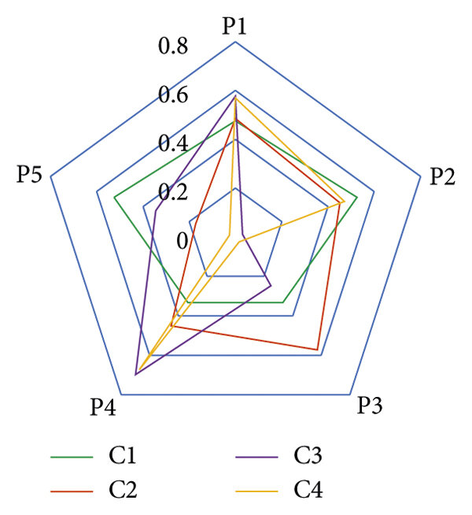
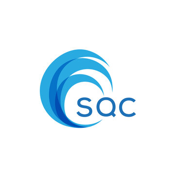

TOPSIS
This project uses the TOPSIS method in Python for multi-criteria decision making, evaluating and ranking alternatives based on conflicting criteria.

SQC
A website developed for the SQC club, encompassing areas such as coding, AI, machine learning,UI/UX designing, and quantum computing. It serves as a central hub for event announcements, project showcases, and resources, fostering collaboration and engagement across diverse technical fields.
Professional Website
Created to showcase my background, portfolio, recognitions, and projects. It serves as a comprehensive platform for sharing professional achievements and facilitating contact, enhancing personal branding and networking opportunities.
More Projects